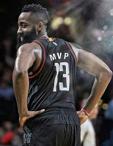

当前位置：首页 > 冠军历史
哈登53+16+17！历史首人！
河北体育网 2016-03-15
火箭在主场击退尼克斯，当家球星詹姆斯-哈登本场比赛表现出色，他出场42分钟，26投14中得到53分16篮板17助攻。 53分刷新了哈登的职业生涯单场比赛得分新高，此前他最多曾在单场比赛中得到51分。 此外，17次助攻也是哈登职业生涯单场比赛助攻纪录，此前他曾两次打出单场17助攻的表现。 哈登的生涯单场篮板纪录是17个，今天他抓下了16个篮板。 此外，哈登成为了NBA历史上首位在单场比赛中至少轰下50分15篮板15助攻的球员。他也追平了威尔特-张伯伦，成为了历史上三双数据中得分最多的球员之一。 今天是哈登本赛季第8次收获三双，职业生涯第17次收获三双。




詹姆斯哈登（James Harden），1989年8月26日出生于美国加利福尼亚州洛杉矶（ Los Angeles, California），美国职业篮球运动员，司职得分后卫，效力于NBA休斯顿火箭队。 詹姆斯·哈登2009年通过选秀进入NBA，2011-12赛季获最佳第六人称号，2013-14赛季入选最佳阵容一阵。 詹姆斯·哈登获2012年随美国男篮获伦敦奥运会金牌，2014随美国队西班牙篮球世界杯冠军。